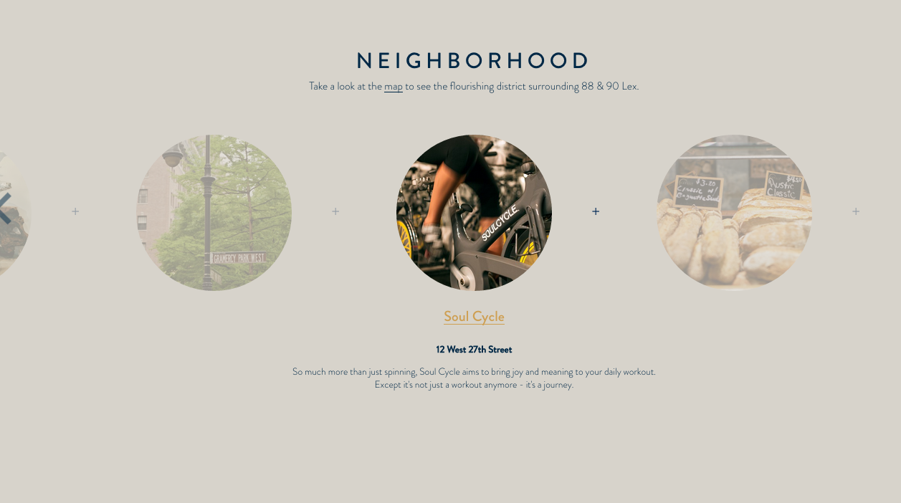

This website has amazing navigation as well as being very organized. When you first enter the site its as if the site comes alive following a time line of different neighborhoods in different time periods. The navigation is easy to follow for any age and its moving slides make it more unique.
The website contains facts as well as graphic design elements which is what drew my eye towards it. I love there are a wide variety of colors and illustrations because it makes the page more exciting. I can see my self using similar features for future projects because of how engaging the site is.
